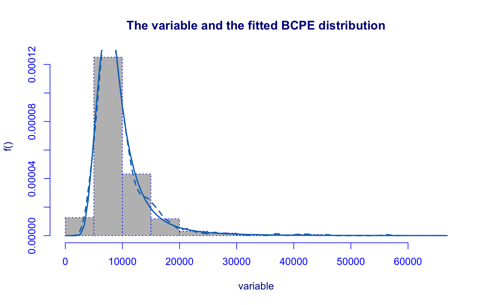

4 Cluster Analysis


4.2 Hard clustering
4.2.1 Hierarchical clustering
| Type | Correlations |
|---|---|
| euclidean_single | 0.7038 |
| euclidean_complete | 0.6547 |
| euclidean_average | 0.7987 |
| euclidean_ward.D2 | 0.4471 |
| manhattan_single | 0.6272 |
| manhattan_complete | 0.5267 |
| manhattan_average | 0.7605 |
| manhattan_ward.D2 | 0.4633 |
Hierarchical clustering with euclidean distance and average linked method


NbClust function
## [1] "Frey index : No clustering structure in this data set"
## *** : The Hubert index is a graphical method of determining the number of clusters.
## In the plot of Hubert index, we seek a significant knee that corresponds to a
## significant increase of the value of the measure i.e the significant peak in Hubert
## index second differences plot.
## 
## *** : The D index is a graphical method of determining the number of clusters.
## In the plot of D index, we seek a significant knee (the significant peak in Dindex
## second differences plot) that corresponds to a significant increase of the value of
## the measure.
##
## *******************************************************************
## * Among all indices:
## * 8 proposed 2 as the best number of clusters
## * 4 proposed 3 as the best number of clusters
## * 1 proposed 4 as the best number of clusters
## * 7 proposed 5 as the best number of clusters
## * 1 proposed 8 as the best number of clusters
## * 1 proposed 9 as the best number of clusters
## * 1 proposed 10 as the best number of clusters
##
## ***** Conclusion *****
##
## * According to the majority rule, the best number of clusters is 2
##
##
## *******************************************************************

Hierarchical clustering with manhattan distance and average linked method


NbClust function

## *** : The Hubert index is a graphical method of determining the number of clusters.
## In the plot of Hubert index, we seek a significant knee that corresponds to a
## significant increase of the value of the measure i.e the significant peak in Hubert
## index second differences plot.
## 
## *** : The D index is a graphical method of determining the number of clusters.
## In the plot of D index, we seek a significant knee (the significant peak in Dindex
## second differences plot) that corresponds to a significant increase of the value of
## the measure.
##
## *******************************************************************
## * Among all indices:
## * 11 proposed 2 as the best number of clusters
## * 1 proposed 3 as the best number of clusters
## * 1 proposed 5 as the best number of clusters
## * 2 proposed 6 as the best number of clusters
## * 1 proposed 7 as the best number of clusters
## * 6 proposed 8 as the best number of clusters
## * 2 proposed 10 as the best number of clusters
##
## ***** Conclusion *****
##
## * According to the majority rule, the best number of clusters is 2
##
##
## *******************************************************************
4.2.2 Partional clustering
K-means


NbClust function
## *** : The Hubert index is a graphical method of determining the number of clusters.
## In the plot of Hubert index, we seek a significant knee that corresponds to a
## significant increase of the value of the measure i.e the significant peak in Hubert
## index second differences plot.
## 
## *** : The D index is a graphical method of determining the number of clusters.
## In the plot of D index, we seek a significant knee (the significant peak in Dindex
## second differences plot) that corresponds to a significant increase of the value of
## the measure.
##
## *******************************************************************
## * Among all indices:
## * 4 proposed 2 as the best number of clusters
## * 15 proposed 3 as the best number of clusters
## * 1 proposed 7 as the best number of clusters
## * 1 proposed 8 as the best number of clusters
## * 1 proposed 9 as the best number of clusters
## * 1 proposed 10 as the best number of clusters
##
## ***** Conclusion *****
##
## * According to the majority rule, the best number of clusters is 3
##
##
## *******************************************************************


Density-based clustering
From Documentation of dbscan package function dbscan
Setting parameters for DBSCAN
The parameters minPts and eps define the minimum density required in the area around core points which form the backbone of clusters. minPts is the number of points required in the neighborhood around the point defined by the parameter eps (i.e., the radius around the point). Both parameters depend on each other and changing one typically requires changing the other one as well. The parameters also depend on the size of the data set with larger datasets requiring a larger minPts or a smaller eps.
minPts: The original DBSCAN paper (Ester et al, 1996) suggests to start by setting \(minPts \geq d + 1\), the data dimensionality plus one or higher with a minimum of 3. Larger values are preferable since increasing the parameter suppresses more noise in the data by requiring more points to form clusters. Sander et al (1998) uses in the examples two times the data dimensionality. Note that setting \(minPts \leq 2\) is equivalent to hierarchical clustering with the single link metric and the dendrogram cut at height eps.
eps: A suitable neighborhood size parameter eps given a fixed value for minPts can be found visually by inspecting the kNNdistplot() of the data using \(k=minPts−1\) (minPts includes the point itself, while the k-nearest neighbors distance does not). The k-nearest neighbor distance plot sorts all data points by their k-nearest neighbor distance. A sudden increase of the kNN distance (a knee) indicates that the points to the right are most likely outliers. Choose eps for DBSCAN where the knee is.


4.2.3 Cluster validation
| Method | APN | AD | ADM | FOM |
|---|---|---|---|---|
| HC - Euclidean - Avg - k=2 | 0.0003 | 5.3248 | 0.0075 | 0.9988 |
| HC - Euclidean - Avg - k=5 | 0.0090 | 5.1870 | 0.1195 | 0.9812 |
| HC - Manhattan - Avg - k=2 | 0.0100 | 17.0750 | 0.1067 | 0.9968 |
| HC - Manhattan - Avg - k=8 | 0.0762 | 14.6278 | 0.7625 | 0.8614 |
| KMeans - k=3 | 0.0446 | 4.3166 | 0.1900 | 0.8142 |
| KMeans++ - k=2 | 0.2790 | 5.1583 | 1.4171 | 0.9792 |
| KMedoids - Euclidean - k=3 | 0.1047 | 4.3950 | 0.4561 | 0.8357 |
| KMedoids - Manhattan - k=3 | 0.1116 | 13.6128 | 0.4865 | 0.8384 |
## Best APN: "HC - Euclidean - Avg - k=2"
## Best AD: "KMeans - k=3"
## Best ADM: "HC - Euclidean - Avg - k=2"
## Best FOM: "KMeans - k=3"4.3 Soft Clustering
4.3.1 Fuzzy Clustering
Fuzzy k-Means with Entropy regularization and Noise cluster
## The default value k=2:6 has been set
## The default value alpha=1 has been set for computing SIL.F
## The default value k=2:6 has been set
## The default value k=2:6 has been set
## The default value k=2:6 has been set
## The default value k=2:6 has been set## SIL.F k=2 SIL.F k=3 SIL.F k=4 SIL.F k=5 SIL.F k=6
## 0.3518378 0.3735748 0.3156925 0.2980328 0.2237030## PC k=2 PC k=3 PC k=4 PC k=5 PC k=6
## 0.7949485 0.8783218 0.8910608 0.8914083 0.8325891## PE k=2 PE k=3 PE k=4 PE k=5 PE k=6
## 0.07165039 0.08514369 0.10977413 0.13535170 0.23454366## MPC k=2 MPC k=3 MPC k=4 MPC k=5 MPC k=6
## 0.5898970 0.8174826 0.8547477 0.8642603 0.7991070## XB k=2 XB k=3 XB k=4 XB k=5 XB k=6
## 0.4991835 0.5150927 0.7636770 0.8387996 1.3164018## Number of clusters
## 3## Number of clusters
## 5## Number of clusters
## 2## Number of clusters
## 5## Number of clusters
## 2## Cluster Membership degree
## Abilene Christian University 2 0.9610382
## Adelphi University 1 0.9999950
## Adrian College 1 0.9957558
## Agnes Scott College 4 0.9971864
## Alaska Pacific University 1 0.8088654
## Albertson College 1 0.5552706## Clus 1 Clus 2 Clus 3 Clus 4 Clus 5
## 234 136 257 79 71## Apps Accept Enroll Top10perc Top25perc
## Clus 1 -0.54137538 -0.5351253 -0.538923862 -0.5966849 -0.7020602
## Clus 2 0.07689591 0.1136329 0.283270904 -0.6227619 -0.4939817
## Clus 3 -0.31730018 -0.2847494 -0.360531417 0.1904085 0.2874775
## Clus 4 0.47419033 0.1209702 -0.006628197 1.8775245 1.5431584
## Clus 5 1.92067978 2.0968591 2.271866624 0.3662210 0.5098355
## F.Undergrad P.Undergrad Outstate Room.Board Books
## Clus 1 -0.5154902 -0.2930539 -0.4239532 -0.44847274 -0.1825171
## Clus 2 0.3416659 0.4792947 -0.9983571 -0.67055186 -0.1282861
## Clus 3 -0.3910031 -0.3011845 0.4908779 0.40359085 -0.1190813
## Clus 4 -0.1366687 -0.4331529 1.7885234 1.22211407 0.2162587
## Clus 5 2.3705990 1.0471669 -0.5123726 -0.09404339 0.4208635
## Personal PhD Terminal S.F.Ratio perc.alumni
## Clus 1 -0.0469895 -1.0291194 -1.0742529 -0.03092423 -0.3169182
## Clus 2 0.4157752 0.1387467 0.1430822 0.94695331 -0.7922122
## Clus 3 -0.3238237 0.3495636 0.3790103 -0.26413957 0.4572679
## Clus 4 -0.4932708 1.1529243 1.1030845 -1.16439626 1.3160856
## Clus 5 0.7513817 0.7247458 0.7029449 0.52421356 -0.5151477
## Expend Grad.Rate
## Clus 1 -0.43950502 -0.4060492
## Clus 2 -0.58583948 -0.7978678
## Clus 3 0.05687871 0.4921093
## Clus 4 1.84395015 1.1582849
## Clus 5 -0.01212232 -0.1701036##
## 1 2 3 4 5
## No 20 115 13 2 62
## Yes 213 20 245 78 9
## Cluster Membership degree
## Abilene Christian University 2 0.9999972
## Adelphi University 2 0.1110816
## Adrian College 2 0.9992632
## Agnes Scott College 1 0.9999842
## Alaska Pacific University 2 0.9995104
## Albertson College 2 0.7586947## Clus 1 Clus 2
## 332 445## Apps Accept Enroll Top10perc Top25perc
## Clus 1 -0.2149199 -0.2054683 -0.3133702 0.4724341 0.5528991
## Clus 2 -0.3263829 -0.3104453 -0.2646493 -0.5648155 -0.5783010
## F.Undergrad P.Undergrad Outstate Room.Board Books
## Clus 1 -0.3577905 -0.32906262 0.7981845 0.5704195 -0.09456016
## Clus 2 -0.2365310 -0.09661831 -0.5922648 -0.4892622 -0.17300438
## Personal PhD Terminal S.F.Ratio perc.alumni
## Clus 1 -0.42180706 0.5383577 0.5653001 -0.4261338 0.6707884
## Clus 2 0.06841061 -0.5416341 -0.5745737 0.2948646 -0.4206397
## Expend Grad.Rate
## Clus 1 0.3328676 0.6235172
## Clus 2 -0.4913391 -0.4637270##
## 1 2
## No 32 180
## Yes 299 266
FK-Med algorithm with Noise cluster (FK MedN algorithm)
## The default value k=2:6 has been set
## The default index SIL.F has been set
## The default value alpha=1 has been set for computing SIL.F## SIL.F k=2 SIL.F k=3 SIL.F k=4 SIL.F k=5 SIL.F k=6
## 0.31672170 0.25337145 0.22778222 0.18049682 0.04819403## Number of clusters
## 2## Cluster Membership degree
## Abilene Christian University 1 0.6790239
## Adelphi University 1 0.3322147
## Adrian College 1 0.8792647
## Agnes Scott College 2 0.4857581
## Alaska Pacific University 1 0.4826669
## Albertson College 1 0.7717227## Clus 1 Clus 2
## 378 399## Apps Accept Enroll Top10perc Top25perc
## Clus 1 -0.5161587 -0.4964291 -0.5822071 -0.25841635 0.3637176
## Clus 2 -0.2001545 -0.0933471 -0.3691151 -0.03166366 -0.0907182
## F.Undergrad P.Undergrad Outstate Room.Board Books
## Clus 1 -0.5753949 -0.5282986 -0.000166353 -0.46277746 -0.1476691
## Clus 2 -0.4617965 -0.4048119 0.741814201 0.06152443 -0.6019244
## Personal PhD Terminal S.F.Ratio perc.alumni
## Clus 1 0.1615159 -0.5916303 -0.5231976 -0.5784492 -0.2214276
## Clus 2 -0.2077214 0.7557356 0.6315087 -0.2752925 0.2627635
## Expend Grad.Rate
## Clus 1 -0.32942310 -0.08518717
## Clus 2 -0.04886681 0.38053265##
## 1 2
## No 105 107
## Yes 273 2924.3.2 Model Based Clustering
## fitting ...
## | | | 0% | | | 1% | |= | 2% | |== | 3% | |== | 4% | |=== | 5% | |=== | 6% | |==== | 6% | |==== | 7% | |===== | 8% | |===== | 9% | |====== | 9% | |====== | 10% | |======= | 11% | |======= | 12% | |======== | 13% | |========= | 14% | |========= | 15% | |========= | 16% | |========== | 17% | |=========== | 18% | |=========== | 19% | |============ | 20% | |============= | 21% | |============= | 22% | |============== | 23% | |============== | 24% | |=============== | 24% | |=============== | 25% | |================ | 26% | |================ | 27% | |================= | 28% | |================= | 29% | |================== | 30% | |================== | 31% | |=================== | 31% | |=================== | 32% | |==================== | 33% | |==================== | 34% | |===================== | 35% | |====================== | 36% | |====================== | 37% | |======================= | 38% | |======================= | 39% | |======================== | 39% | |======================== | 40% | |========================= | 41% | |========================= | 42% | |========================== | 43% | |========================== | 44% | |=========================== | 45% | |=========================== | 46% | |============================ | 46% | |============================ | 47% | |============================= | 48% | |============================= | 49% | |============================== | 50% | |=============================== | 51% | |=============================== | 52% | |================================ | 53% | |================================ | 54% | |================================= | 54% | |================================= | 55% | |================================== | 56% | |================================== | 57% | |=================================== | 58% | |=================================== | 59% | |==================================== | 60% | |==================================== | 61% | |===================================== | 61% | |===================================== | 62% | |====================================== | 63% | |====================================== | 64% | |======================================= | 65% | |======================================== | 66% | |======================================== | 67% | |========================================= | 68% | |========================================= | 69% | |========================================== | 69% | |========================================== | 70% | |=========================================== | 71% | |=========================================== | 72% | |============================================ | 73% | |============================================ | 74% | |============================================= | 75% | |============================================= | 76% | |============================================== | 76% | |============================================== | 77% | |=============================================== | 78% | |=============================================== | 79% | |================================================ | 80% | |================================================= | 81% | |================================================= | 82% | |================================================== | 83% | |=================================================== | 84% | |=================================================== | 85% | |=================================================== | 86% | |==================================================== | 87% | |===================================================== | 88% | |===================================================== | 89% | |====================================================== | 90% | |====================================================== | 91% | |======================================================= | 91% | |======================================================= | 92% | |======================================================== | 93% | |======================================================== | 94% | |========================================================= | 94% | |========================================================= | 95% | |========================================================== | 96% | |========================================================== | 97% | |=========================================================== | 98% | |============================================================| 99% | |============================================================| 100%## Best BIC values:
## VVE,9 VVE,8 VVE,7
## BIC -18547.17 -18671.4418 -18925.0659
## BIC diff 0.00 -124.2717 -377.8958## ----------------------------------------------------
## Gaussian finite mixture model fitted by EM algorithm
## ----------------------------------------------------
##
## Mclust VVE (ellipsoidal, equal orientation) model with 9 components:
##
## log-likelihood n df BIC ICL
## -7776.111 777 450 -18547.17 -18669.83
##
## Clustering table:
## 1 2 3 4 5 6 7 8 9
## 52 101 90 125 112 94 46 54 103## [1] 0.06622097 0.12792665 0.11481097 0.16651318 0.14552249 0.11773428
## [7] 0.06014954 0.06941217 0.13170975## [,1] [,2] [,3] [,4]
## Apps -0.4358710 -0.593517911 -0.65209566 -0.40506955
## Accept -0.3977427 -0.584991190 -0.66539034 -0.36932825
## Enroll -0.3943046 -0.587571366 -0.66409786 -0.37534237
## Top10perc -0.5616410 -0.448178918 -0.56708147 -0.18964173
## Top25perc -0.7379122 -0.557615978 -0.62746672 -0.07642379
## F.Undergrad -0.3905954 -0.571252335 -0.60638527 -0.40197641
## P.Undergrad -0.0410268 -0.450581712 -0.29816621 -0.24860839
## Outstate -0.3158232 -0.418279996 -0.04383405 -0.17686480
## Room.Board -0.1756398 -0.611997031 0.10139524 -0.14251361
## Books 1.0211817 -0.257319000 -0.34894509 -0.16294791
## Personal 0.6656954 0.008950973 -0.31519025 -0.13539388
## PhD -1.3001876 -0.549293948 -0.98097181 -0.09152328
## Terminal -0.6956987 -0.852898788 -0.74341522 -0.15534845
## S.F.Ratio 0.5713960 -0.024715662 -0.66699155 0.13496876
## perc.alumni -0.7042551 -0.360056235 0.26488042 -0.07388110
## Expend -0.2210129 -0.424125100 -0.23933607 -0.35857153
## Grad.Rate -0.4964314 -0.470218641 -0.10897968 0.11674254
## [,5] [,6] [,7] [,8]
## Apps 0.15564458 -0.4289122 0.003453231 2.2346636
## Accept 0.21189478 -0.3852465 -0.140276201 1.7655669
## Enroll 0.13747312 -0.4488426 -0.305052283 1.7772492
## Top10perc -0.23293031 0.4368474 1.494324110 1.8277878
## Top25perc -0.16989084 0.4799023 1.409442981 1.4550356
## F.Undergrad 0.09382727 -0.4898391 -0.378439810 1.6372179
## P.Undergrad 0.06728724 -0.5143079 -0.522065187 0.7506832
## Outstate -0.27918412 0.8082375 1.888759688 0.6620942
## Room.Board 0.11818109 0.2480671 1.070765307 0.7524475
## Books -0.01409765 -0.3282837 0.451336662 0.3166973
## Personal 0.09028468 -0.6749934 -0.616045627 0.1790149
## PhD 0.12460431 0.5715497 1.059709710 1.0637864
## Terminal 0.02628736 0.6443627 1.069427720 0.9604501
## S.F.Ratio 0.48090902 -0.4721405 -0.835966601 -0.8059154
## perc.alumni -0.42202427 0.9967398 1.607482199 0.2403655
## Expend -0.32077044 0.3324637 1.299720620 2.0012796
## Grad.Rate 0.04547957 0.4027904 1.212443492 0.5775395
## [,9]
## Apps 0.90832327
## Accept 1.05894953
## Enroll 1.27437183
## Top10perc -0.32706373
## Top25perc -0.09557148
## F.Undergrad 1.43220268
## P.Undergrad 1.26067249
## Outstate -0.79864151
## Room.Board -0.46335361
## Books 0.18268539
## Personal 0.79314220
## PhD 0.46489098
## Terminal 0.42302579
## S.F.Ratio 0.84469562
## perc.alumni -0.71917057
## Expend -0.40601348
## Grad.Rate -0.61465582